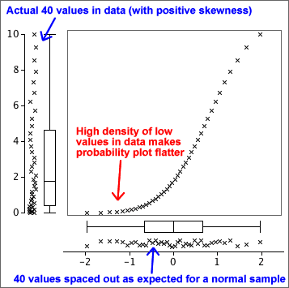

Do the data come from a normal distribution?
A histogram may indicate that a sample is unlikely to come from a normal distribution, but a normal probability plot can indicate more subtle departures from a normal distribution.
If the data set is from a normal distribution, the data should be spaced out in a similar way to the normal quantiles, so the crosses in the normal probability plot should lie close to a straight line.

How much curvature is needed to suggest non-normality?
This is a difficult question to answer and we will not address it here.